Ich baue, was mir selbst fehlt
Fast jede meiner Ideen kommt aus einer Situation, die ich selbst erlebt habe – als Mutter, in einer Familie mit Neurodivergenz, im Vereinsvorstand. Das erspart mir die Frage, ob es das Problem wirklich gibt.
Ich entwickle Software und Hardware für Familien mit besonderen Herausforderungen: Neurodivergenz, Pflege, Trennung.
Medieninformatik heißt für mich beides. Ich schreibe den Code, aber ich gestalte auch, was am Ende zu sehen ist – Farbe, Typografie, Bildsprache, Barrierefreiheit. Ein Produkt, das gut gebaut ist und sich trotzdem fremd anfühlt, hat sein Ziel verfehlt.
Vor der Medieninformatik habe ich Lehramt studiert, an der Universität Vechta empirische Forschungsmethoden unterrichtet, eine kaufmännische Ausbildung im Großhandel gemacht und in der Kindertagespflege gearbeitet. Diese Stationen waren kein Umweg. Sie sind der Grund, warum ich weiß, für wen ich baue und was im Alltag tatsächlich hält.
Fast jede meiner Ideen kommt aus einer Situation, die ich selbst erlebt habe – als Mutter, in einer Familie mit Neurodivergenz, im Vereinsvorstand. Das erspart mir die Frage, ob es das Problem wirklich gibt.
Drei Jahre Lehre in empirischer Bildungsforschung haben mir beigebracht, Annahmen zu prüfen, statt sie zu glauben. Vor der ersten Zeile Code stehen Gespräche, Rollen und ein Konzept, das man jemandem vorlesen kann.
Kontraste, Schriftgrößen, einfache Sprache und Screenreader-Tauglichkeit plane ich von Anfang an mit. Wer meine Produkte braucht, hat oft ohnehin schon genug Hürden im Alltag.
Meine Apps funktionieren offline, speichern lokal und verschlüsseln, was das Gerät verlässt. In den Bereichen, für die ich baue, geht es um Gesundheit, Kinder und Familienkonflikte – da ist Datensparsamkeit keine Kür.
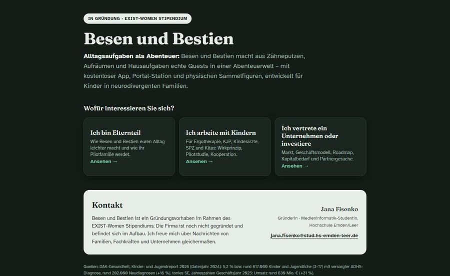
Eine App, die zwei Hälften verbindet: Eltern verwalten Haushaltsaufgaben und Taschengeld, Kinder spielen ein Rollenspiel-Abenteuer. Erledigte Aufgaben erzeugen Schritte, XP und Münzen – das Spiel verbraucht sie. Physisch sind genau drei Dinge: 3D-gedruckte Sammelfiguren mit Chip, eine Portal-Station, die sie ausliest und daraufhin Helden oder ganze Biome freischaltet, und Taschengeld, das aus Münzen getauscht wird.
Der Grundsatz dahinter: Das Spiel ist kein Beiwerk der Aufgaben-App, sondern der Motivator, ohne den sie nicht funktioniert. Beide Hälften bekommen dieselbe Aufmerksamkeit. Gefördert durch das EXIST-Women-Stipendium.
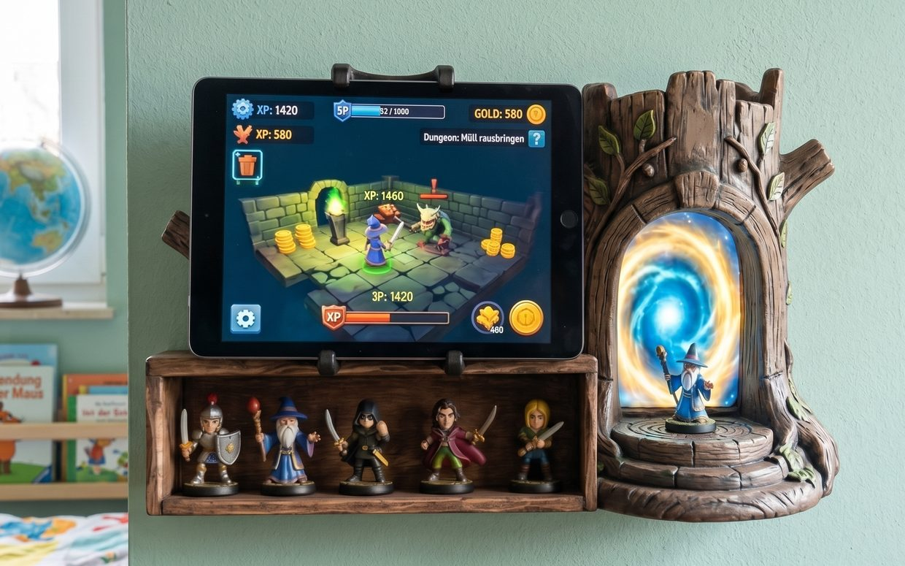
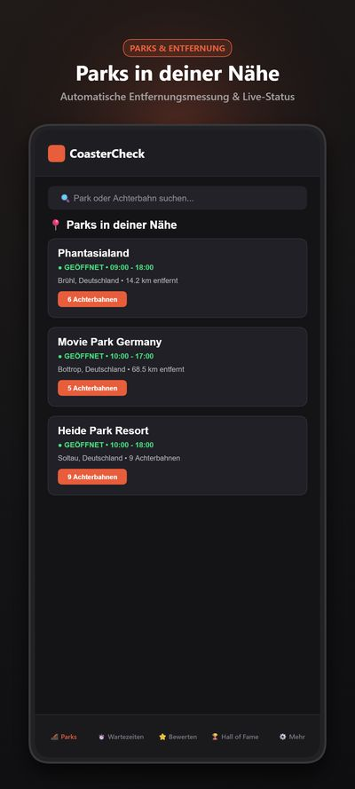
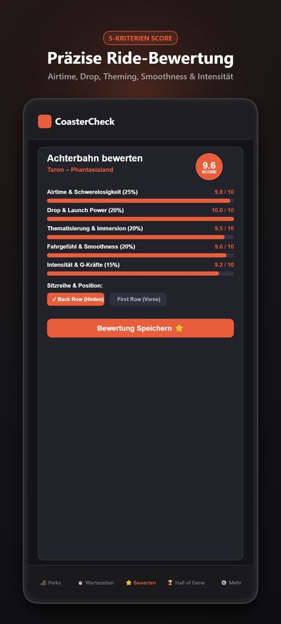
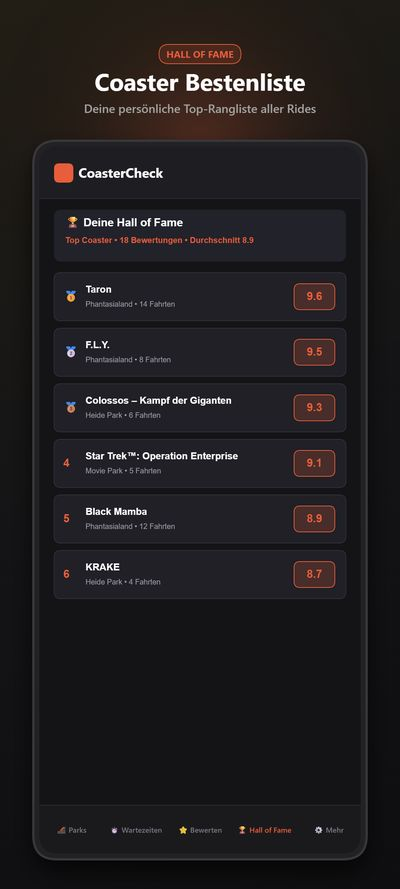
Offline-First-App für Freizeitpark-Fans: Fahrten loggen, Attraktionen über ein Punktesystem aus fünf Kriterien bewerten, Live-Wartezeiten abrufen. GPS erkennt den Park im 5-km-Radius; IndexedDB und Service Worker halten alles verfügbar, auch wenn im Park kein Netz mehr da ist. Als Progressive Web App und als Android-Build.
Öffentliche Fassung ohne Server – Live-Wartezeiten und Push sind darin deaktiviert.
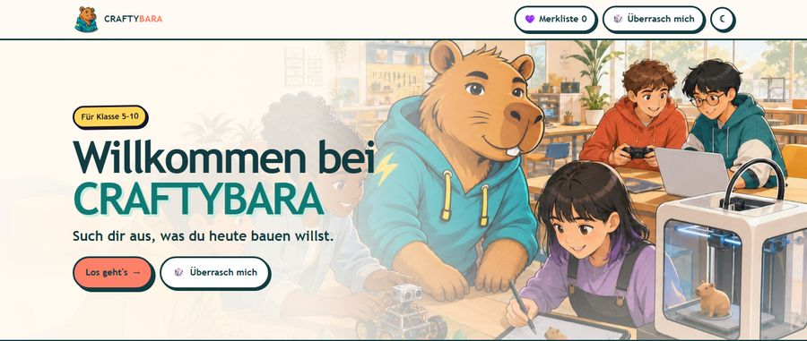
Begleit-App zu meiner Technik-AG, die ich zweimal pro Woche an einer freien Schule gebe. Sie versammelt fünfzig Lernangebote in acht Welten – KI und Lernen, Content-Studio, Code und Games, Roboter-Expeditionen, VR und AR, Maker-Space, Digitales Atelier, 3D-Welten – jeweils mit Ablauf, Material, Rollen und Varianten.
Jedes Angebot ist an das niedersächsische Kerncurriculum geknüpft, für Informatik in der Sekundarstufe I und für Sachunterricht in der Grundschule. Die App läuft vollständig offline, hat einen eigenen Lernbegleitungsmodus und eine Zufallskarte für Gruppen, die sich nicht entscheiden können. Marke, Figur und Bildwelt stammen ebenfalls von mir.
Gemeinsamer Betreuungskalender für getrennt lebende Eltern, Android und iOS aus einer Flutter-Codebasis. Das Versprechen, an dem sich die App messen lässt: 95 % der Änderungen in unter 30 Sekunden – und die Änderung kommt beim anderen Elternteil wirklich an. Ereignisabgleich mit sichtbaren Konflikten statt stiller Überschreibung, Ende-zu-Ende-Verschlüsselung, Push und Nachweis-Export sind als Architekturentscheidungen dokumentiert.
Gamification-App für neurodivergente Menschen, die eine verlässliche Medikamenten-Routine aufbauen wollen. Aus einem Ei schlüpft nach vierzehn Einnahmen ein „Medizini", der über rund drei Monate vier Entwicklungsstufen durchläuft. Kein klinisches Wording, keine Bestrafungsmechanik, keine Schuldgefühle – und zu hundert Prozent offline.
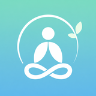
Achtsamkeit in 3 MinutenAndroid-App für ein Tagebuch, das auch an stressigen Tagen ausgefüllt wird: Ankreuzfragen zu Energie, Grundgefühl und Dankbarkeit statt leerem Textfeld. Gebaut als Design-System – drei visuelle Stile mal vier Paletten ergeben zwölf Themes, alle aus einer einzigen Token-Datei gespeist und 1:1 nach Jetpack Compose übersetzt. Editionen für Kinder und Jugendliche sind in Vorbereitung.
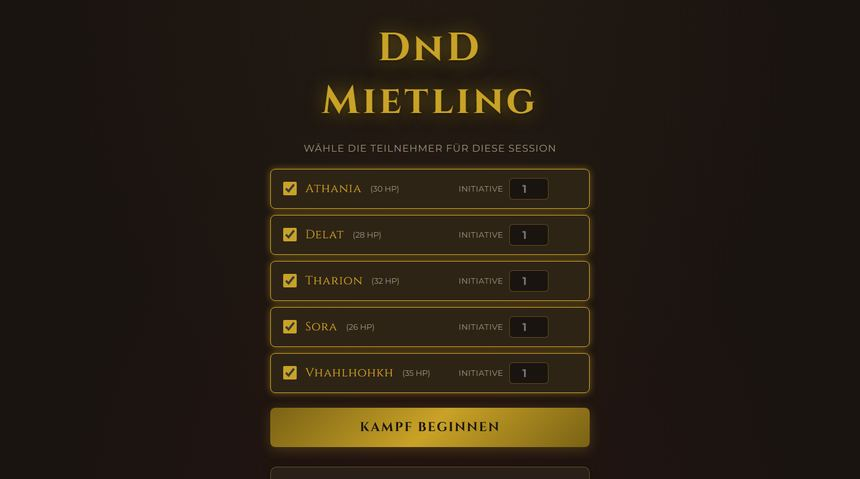
Combat-Tracker für den Spieltisch: Initiative, alle fünfzehn Zustände aus dem Regelwerk von 2024 inklusive Erschöpfungsstufen, Konzentrationsproben mit automatisch berechnetem Schwierigkeitsgrad, Todesrettungswürfe, Monsterhorden per Duplikat und Drag-and-drop als echter Platztausch. Auf Tablet-Bedienung hin gebaut und im wöchentlichen Einsatz.
Nachschlagewerk und Charakterbogen für dieselbe Spielrunde: die Grundregeln vollständig auf Deutsch mit tippfehlertoleranter Fuzzy-Suche, ein im Betrieb editierbarer Charakterbogen und ein Trefferpunkt-Tracker mit Todesrettungswürfen. Handy und Tablet teilen sich über einen Cloudflare-Worker denselben Stand.
Dazu ein Regel-Assistent, der ausschließlich auf dem selbst hinterlegten Regelwerk arbeitet: Er beantwortet Regelfragen mit Belegstelle, schlägt sinnvolle Kampfhandlungen vor und erklärt den nächsten Zug – ohne zu erfinden, was nicht im Buch steht.
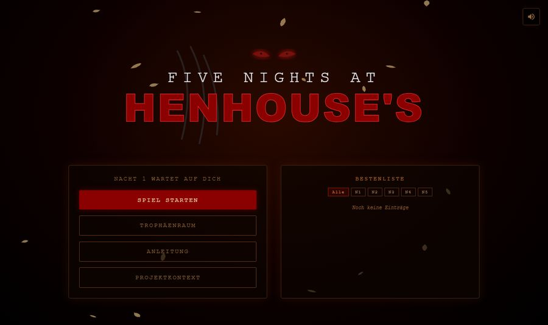
Browserbasiertes Survival-Horror-Spiel: Nachtschicht auf einem Bauernhof, ein schlauer Fuchs, vier Überwachungskameras und eine Batterie, die jede Aktion kostet. Fünf Nächte, und der Fuchs wird jede Nacht schneller. Gebaut aus Canvas, Inline-SVG und Three.js auf einer Vue-3-Zustandsmaschine – entstanden im Modul Rich Media Anwendungen, mit schriftlich begründeter Abweichung vom vorgegebenen Stack.
Web-App für die Beschlussfassung einer freien Schule. Sechs Abstimmungsmodi – von Ja/Nein über Skalen und Borda-Rangfolge bis zum Systemischen Konsensieren mit Widerstandsstimmen –, mehrere Abstimmungen parallel, PDF-Protokoll mit Diagrammen und CSV-Export. Gebaut für eine Schule, an der Handzeichen und Papierzettel bei sechs verschiedenen Abstimmungsverfahren nicht mehr trugen.
Android-Homescreen-Widget für Notion: Foto aufnehmen oder Notiz einsprechen, beides landet direkt in der Notion-Datenbank. Native RemoteViews und die Android-Spracherkennung über eine eigene Bridge – damit es ohne Sprachassistenten funktioniert und der Gedanke nicht verloren geht, bevor die App geladen hat.
Ein Babyphone für pflegende Angehörige. Dieselbe Technik, die Eltern selbstverständlich nutzen, gedacht für die andere Seite des Lebens: mitbekommen, wenn etwas nicht stimmt, ohne im Nebenzimmer sitzen zu müssen.
Alle Unterlagen, Termine, Medikamente und Absprachen einer Pflegesituation an einem Ort – und zwar so, dass eine Vertretung sie ohne Rückfragen versteht. Entsteht gerade aus denselben Gesprächen wie grannyconnect.
Arbeiten aus dem Medienteil meines Studiums. Hier geht es nicht um Architektur und Datenmodelle, sondern um Wirkung: Was sieht jemand zuerst, was versteht er sofort, und fühlt es sich nach der Marke an, für die es gemacht ist?
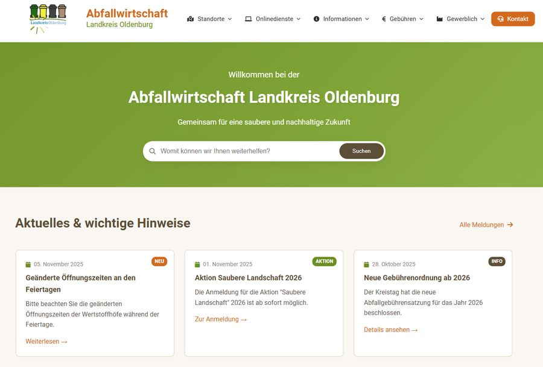
Relaunch-Konzept · Landkreis Oldenburg
Kompletter Neuentwurf eines kommunalen Webauftritts: Mobile First, hohe Kontraste, Leichte Sprache und Screenreader-Optimierung, dazu eine Suche mit Fuzzy-Matching, eine GPS-gestützte Standortsuche für Wertstoffhöfe und Container, ein Gebührenrechner und eine Kontaktsuche nach Anliegen statt nach Zuständigkeit. Bewusst in nativem JavaScript ohne schwere Frameworks – schnell, wartbar und datensparsam.
Studienentwurf, keine offizielle Seite des Landkreises Oldenburg.
Grundlagen virtueller Welten · 2025 · Unity und Blender
Eine begehbare Kita in Pripyat, kurz nach dem Reaktorunglück – eine reale Einrichtung, frei interpretiert und nachgebaut. Thema der Arbeit war Miniaturwelt: Mitten im Verfall steht ein perfekt erhaltenes Puppenhaus. Diese heile kleine Welt im zerfallenen großen Raum ist der Kontrast, um den herum die Szene gebaut ist.
Modelle und Texturen in Blender, Szene, Licht und Begehung in Unity. Das Rundgang-Video läuft direkt hier im Browser.
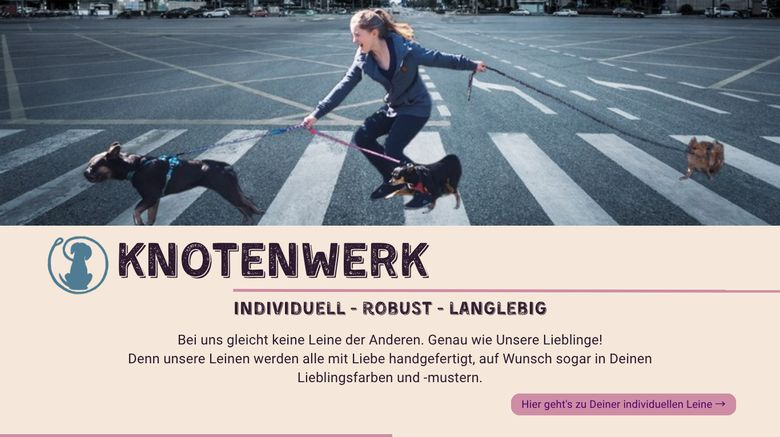
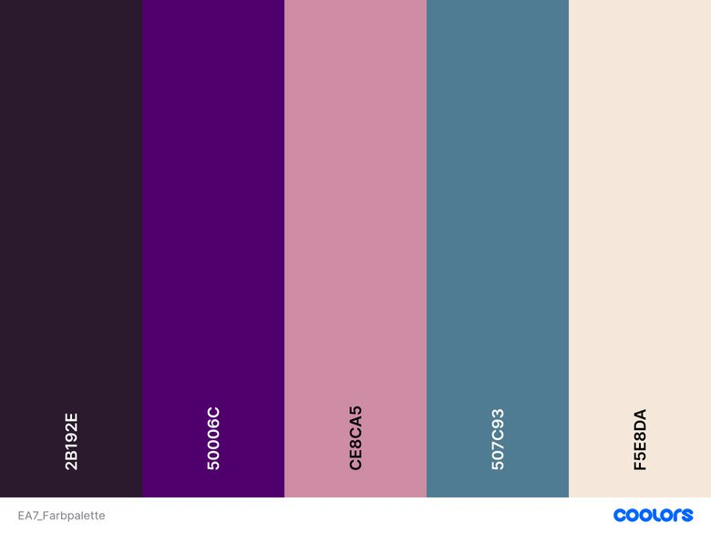
Mediendesign 2 · Corporate Design
Für eine Manufaktur handgeknüpfter Hundeleinen habe ich drei Layoutlinien entwickelt und gegeneinander bewertet: Prägnanz, Originalität, Konkordanz. Die kühle, „modernste" Variante gewann die Kriterien – und verlor trotzdem, weil sie nicht mehr nach Handarbeit aussah. Gewählt wurde die wärmere dritte Fassung inklusive Barrierefreiheits-Panel für Schriftgröße, Kontrast und Leichte Sprache.
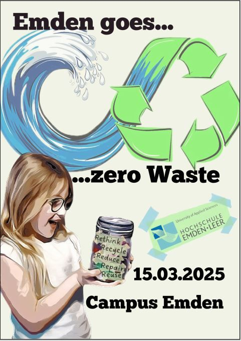
Mediendesign 1 · Plakat
Vom Bleistift-Scribble über Moodboard und Farbpalette bis zum finalen Plakat in drei Fassungen. Das Festivallogo verbindet Nordseewelle und Recyclingpfeil zu einem Unendlichkeitszeichen; Blickfang ist am Ende nicht das Logo, sondern ein Kind mit einem Zero-Waste-Glas – Begeisterung überzeugt zuverlässiger als ein Symbol.
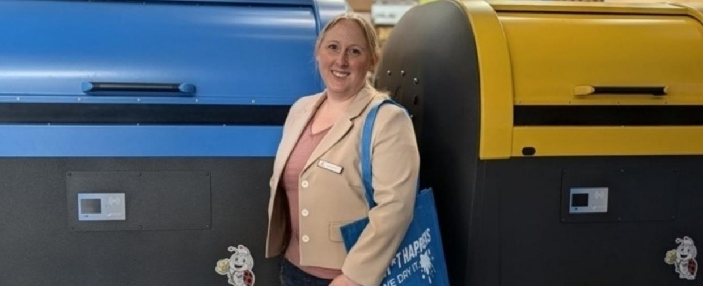
seit 03/2024
10/2023 – 01/2024
ein Semester, zugunsten der Medieninformatik beendet
11/2021 – 01/2024
Module „Methoden der empirischen Bildungsforschung" und „Quantitative Forschungsmethoden", inklusive Erstellung der Lehr- und Lernmaterialien.
10/2022 – 01/2023
Rechnungserstellung, Datenpflege, Belegweiterleitung über DATEV, Terminplanung.
10/2018 – 09/2023
Abschlussnote 1,9
10/2017 – 09/2018
01/2017 – 11/2017
03/2013 – 01/2017
Kundenbetreuung, Angebots- und Auftragsabwicklung, Terminplanung für Betriebsführungen und Seminare, Überwachung von Lieferterminen.
davon Elternzeit 09/2014 – 12/2016
01/2013 – 03/2013
Betreuung der Großkunden in den Niederlanden und Großbritannien, Koordinierung der Fertigung.
08/2010 – 01/2013
Ich freue mich über Nachrichten zu Kooperationen, Pilotpartnerschaften, Förderung und allem, was an der Schnittstelle von Technik, Gestaltung und Alltag liegt. Auf E-Mails antworte ich in der Regel innerhalb von zwei Werktagen.
Angaben gemäß § 5 DDG:
Jana Fisenko
c/o Hochschule Emden/Leer
Constantiaplatz 4
26723 Emden
E-Mail: jana.fisenko@hotmail.com
Verantwortlich für den Inhalt dieser Seite: Jana Fisenko (Anschrift wie oben). Es besteht kein eingetragenes Unternehmen; die auf dieser Seite genannten Vorhaben befinden sich in der Entwicklungs- beziehungsweise Gründungsphase.
Jana Fisenko, c/o Hochschule Emden/Leer, Constantiaplatz 4, 26723 Emden, E-Mail: jana.fisenko@hotmail.com
Beim Aufruf dieser Seite verarbeitet der Hostinganbieter automatisch technisch notwendige Verbindungsdaten (z. B. IP-Adresse, Datum und Uhrzeit des Abrufs, abgerufene Datei, Browsertyp) in Server-Logfiles, um die Seite sicher und stabil bereitzustellen (Art. 6 Abs. 1 lit. f DSGVO). Diese Daten werden nicht mit anderen Datenquellen zusammengeführt.
Diese Seite verwendet keine Cookies, keine Analyse- oder Trackingdienste und keine Werbenetzwerke. Schriften und Bilder werden ausschließlich von diesem Server geladen; beim Aufruf dieser Startseite wird keine Verbindung zu Google Fonts oder anderen Drittanbietern aufgebaut. Für die beiden verlinkten Unterseiten gelten die folgenden Absätze.
Wenn Sie über die Schaltfläche „Hell/Dunkel" ein Farbschema wählen, wird diese Einstellung im lokalen Speicher Ihres Browsers (localStorage) abgelegt, damit die Seite sie beim nächsten Besuch berücksichtigt. Es handelt sich um eine rein technische Komfortfunktion; die Angabe verlässt Ihr Gerät nicht und lässt sich jederzeit über die Browsereinstellungen löschen.
Die unter /apps/coastercheck/ erreichbare Anwendung ist eine eigenständige Progressive Web App. Sie speichert Ihre Eingaben ausschließlich lokal auf Ihrem Gerät (IndexedDB und localStorage) und lädt Schriften, Symbole und Bilder von diesem Server. Die hier veröffentlichte Fassung läuft ohne eigenes Backend: Es werden keine Wartezeiten, Öffnungszeiten oder Bewertungen an einen Server übertragen oder von dort abgerufen, und Push-Benachrichtigungen sind deaktiviert. Standortdaten werden nur nach ausdrücklicher Freigabe im Browser verwendet, verlassen Ihr Gerät nicht und dienen allein der Parkerkennung. Ein Service Worker legt die Dateien der Anwendung im Browser-Cache ab, damit sie offline funktioniert.
Der unter /apps/abfallwirtschaft/ erreichbare Prototyp ist ein Studienentwurf und keine Seite des Landkreises Oldenburg. Er lädt das Symbol-Set Font Awesome über cdnjs.cloudflare.com, die Schriftart Roboto über Google Fonts und auf der Kartenseite die Bibliothek Leaflet über unpkg.com sowie Kartenkacheln von OpenStreetMap; dabei wird Ihre IP-Adresse an die jeweiligen Anbieter übermittelt. Die Formulare des Entwurfs verschicken nichts – Ihre Eingaben bleiben im Browser und dienen nur der Anzeige einer Beispielbestätigung. Einstellungen zu Kontrast und Schriftgröße werden im localStorage Ihres Browsers gespeichert; die Umkreissuche auf der Karte fragt Ihren Standort nur nach ausdrücklicher Freigabe ab und wertet ihn ausschließlich lokal aus.
Wenn Sie mir per E-Mail schreiben, verarbeite ich Ihre Angaben ausschließlich zur Bearbeitung der Anfrage (Art. 6 Abs. 1 lit. b bzw. f DSGVO) und lösche sie, sobald sie nicht mehr erforderlich sind und keine gesetzlichen Aufbewahrungspflichten bestehen.
Diese Seite verlinkt auf externe Angebote. Beim Anklicken eines solchen Links gelten die Datenschutzbestimmungen des jeweiligen Anbieters; eine Übertragung von Daten findet erst statt, wenn Sie den Link aktiv aufrufen.
Sie haben das Recht auf Auskunft, Berichtigung, Löschung, Einschränkung der Verarbeitung, Datenübertragbarkeit und Widerspruch sowie ein Beschwerderecht bei einer Datenschutzaufsichtsbehörde, z. B. bei der Landesbeauftragten für den Datenschutz Niedersachsen.
Stand: August 2026